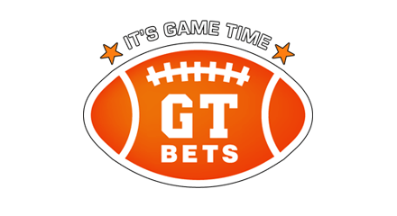

WHICH SPORTSBOOK HAS THE QUICKEST PAYOUTS?
When it comes to playing for money, you have to be careful with where you invest. Some sportsbooks will live up to their promises, while others will take you for a ride. The last thing you want is to have a sure win but no way to access your money. In this guide, you will find the payout levels as well as sites that you can trust. Let’s get started:
Payout levels
Grade A is the best level where you can access your winnings in two days or less, more so when you use virtual currencies. If you opt for the traditional forms of payment, the transaction should take a week or less.
Grade B is a compromise to the first level, but it is also an excellent choice. Virtual currencies are available in under two days, while traditional means take one to two weeks.
Grade C is a bit slower. It takes up to a week for you to get your hands on virtual money, whereas traditional means could reflect after a month.
From here onwards, any other grade would not be a good idea. Take Grade D, for example. It takes weeks to get hold of digital currencies. When it comes to bank transfers, you could spend up to two months waiting for your cash.
And with Grade F, you are better off handing your cash to a Ponzi scheme. Either way, you may not get your money. And if you do, you will have to fight for it. Given that you already won the bet fair and square, why should you go through so much to get your cut?
Best Options
Now that we have covered what you can expect of the various options in the market, we can now look at reputable sites. After that you can check some tips how to use properly these platforms.
Bovada
Bovada is one such site that has gained the reputation of holding up to its end of the deal. If you want a check, the transaction should take place in ten to fifteen days. You should note, though, that the period is highly dependent on the number of transactions taking place at the time. If you choose to use digital currencies, you can have your money in as few as fifteen minutes after deductions. This site does not offer bank transfers as these lead to the incurring of high costs by users. Not to mention the time it takes!
Sportsbetting
With this site, you get a check delivered to you within a week from the point of withdrawal. People using digital money can have their winnings sent to them within a day. Compared to most sites, this speed is quite impeccable, and it has earned them many users. As for bank transfers, you have to wait up to fifteen days to get hold of the cash.
GTbets
With this site, you do not have the option of having the check delivered to you. However, the bank transfers are much faster than what you would get on other sites. It takes twelve business days for the transactions to reflect. When using digital money, you can access your winnings within a day or less.
BetOnline
This site also excels in fast withdrawals such that you can have your check delivered within a week. Note that the delivery times will depend on when you made the withdrawal request. When it comes to virtual money, the withdrawals take up to a day. You can get your cash wired to your bank account within fifteen business days. That means that you wait almost three weeks before getting the cash.
Intertops
If you think that seven business days are short, this site will impress you. They deliver checks to winners within five business days. Digital money processing takes one or two days, while bank transfers take ten to fifteen days.
5Dimes
This site has relatively fast transactions when it comes to digital money. However, there is a catch to it. It depends on how much money the site has at the moment. Where the funds are available, payouts take place immediately. If not, you have to wait a while.
Seeing these options and gauging them by the grade levels, what would be your pick?